Here i am going to show you the easiest way possible to share files between your PC and iphone. I have suffered this problem a lot
with my low storage iPhone, and now i have found the great solution for it
WIRELESS CONNECTION
WITHOUT ANY INTERNET REQUIRED
complete process
- connect your iphone's hotspot
- create new user account & set password
- create new folder share it with new created account account
- now copy the ip address from network and sharing center
- open files in iPhone & connect server
- now simply share the file
1. connect your iPhone's hotpot in pc
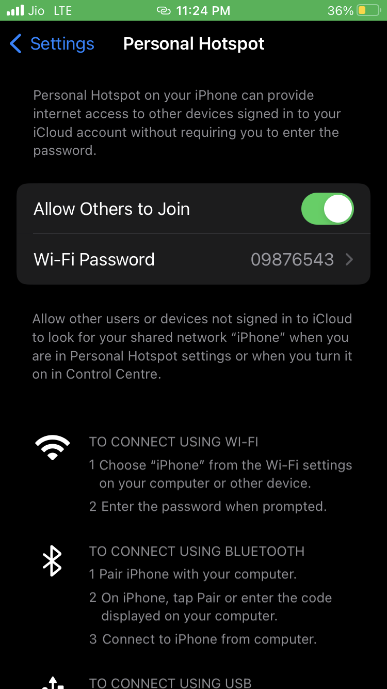
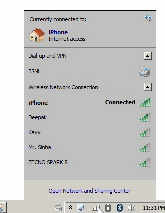
2. Create new user
- Go to start -> click on user icon -> click on manage another account -> create a new account
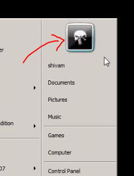
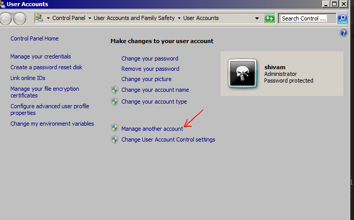
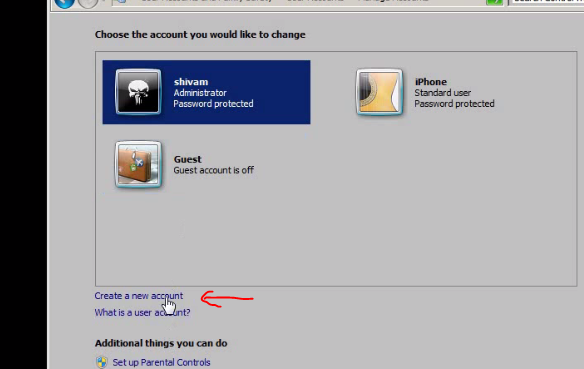
- name it & set password
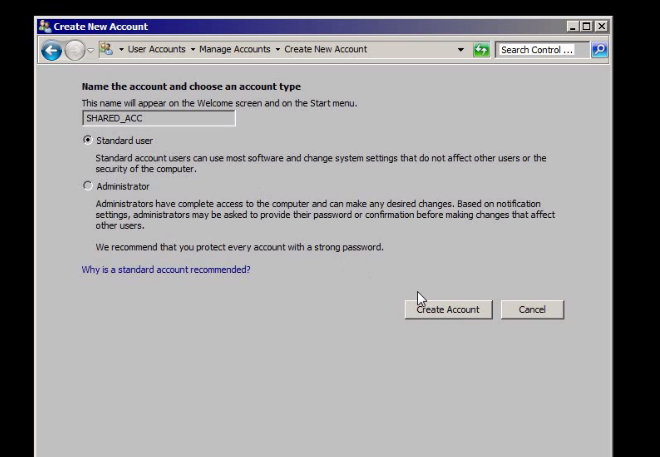
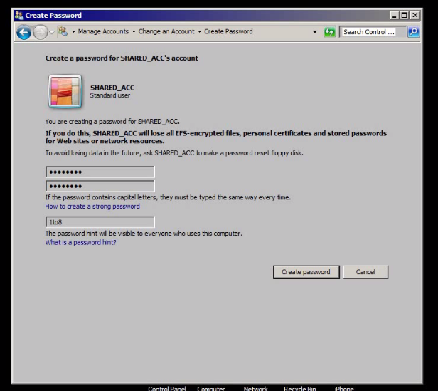
3. Create folder on desktop and share it
- share with specific people -> select newely created account -> give read and write permission
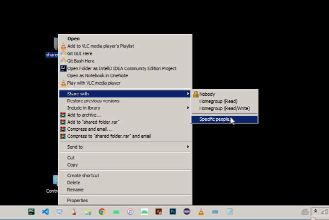
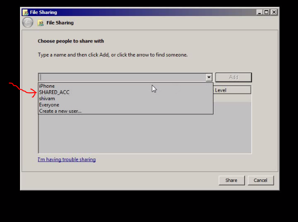
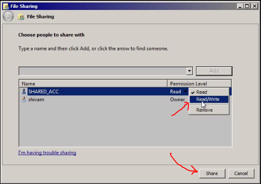
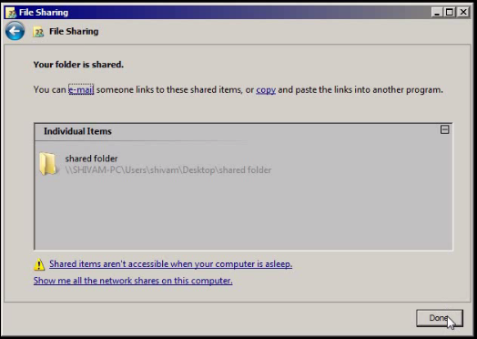
NOW GO TO FOLDER PROPERTIES -> advance Sharing
-> tick share this folder
-> then click on permissions
-> add the name of new user
-> select the user -> give full permission
-> apply ok -> apply ok
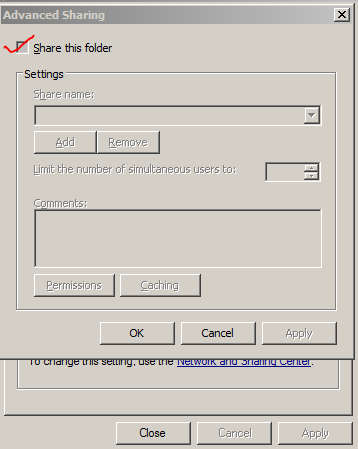
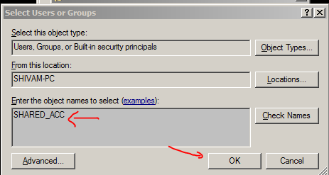
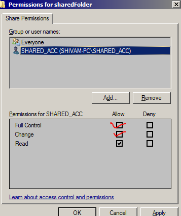
NOW YOU ARE DONE WITH SHARING THE FOLDER
4. Copy the ipAddress from
-> open network and sharing center
-> go to connections
-> go to details and copy ipv4 address
 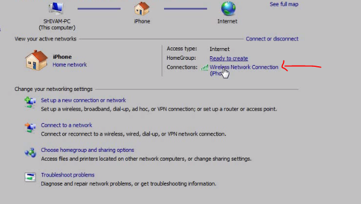
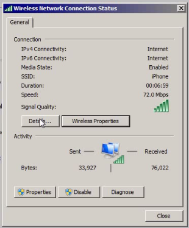
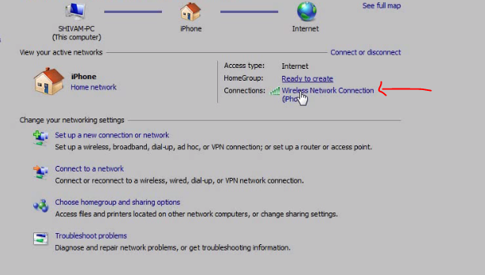
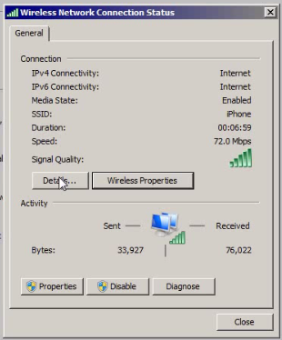
5 .open Files App in Iphone
-> click three dots in right upper corner
-> click to connect to server
-> type smb://YouriPaddress
-> login with the user name & password (of windows that we newely created)
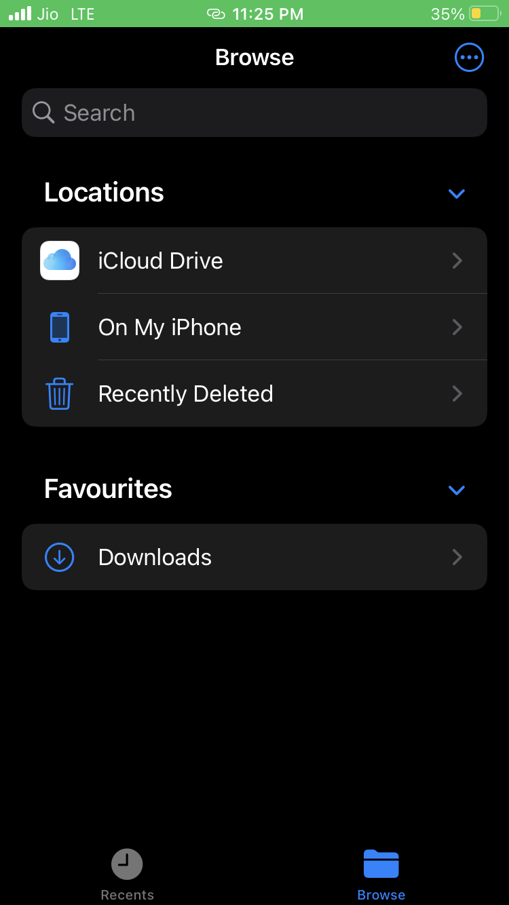
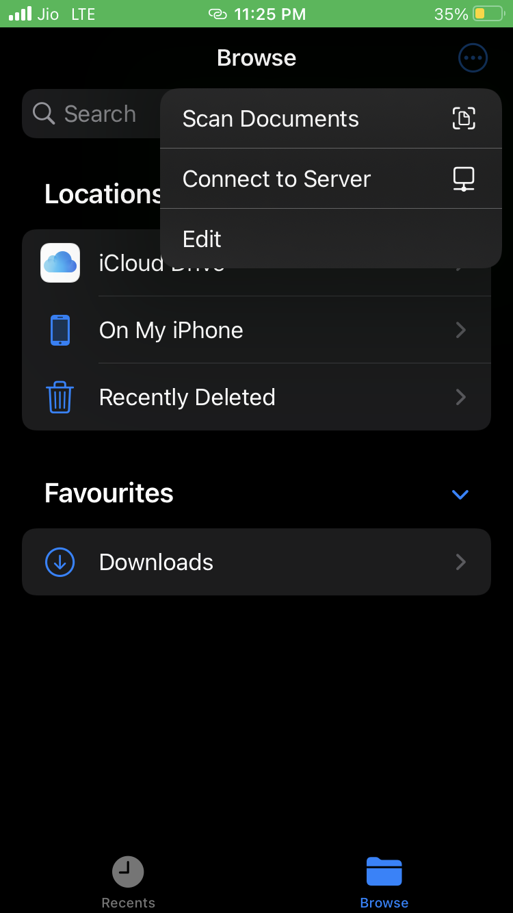
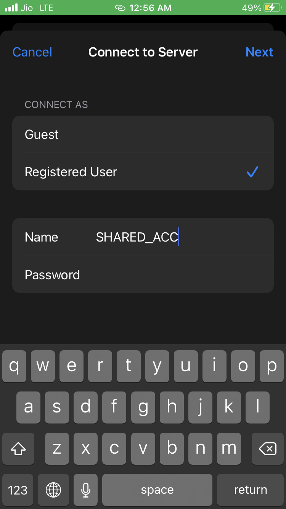
6. YOU ARE GOOD TO GO
now to share from windows to iphone -> simply put anything in the shared folder
and to share from iphone to windows
-> select photos
-> save to files
-> there you will get the option of your ipAddress
-> in there you will find your shared folder
-> when you put files into that folder it will simply reflect into your computer